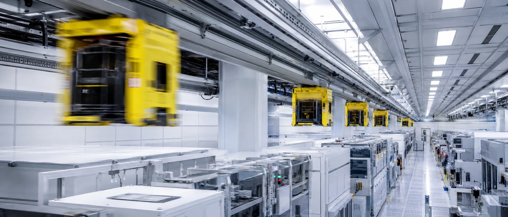
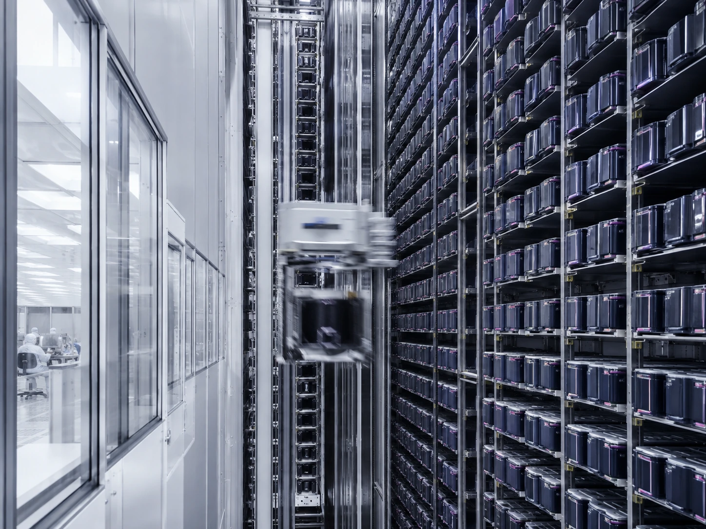

OHT 天車晶圓搬送系統
AMHS 是產能的節拍器——TeraFab 以廠商中立的顧問身分，做軌道路網規劃、 搬送模擬與系統整合，讓每一個 FOUP 準時抵達。

TeraFab 不製造搬送設備。我們是業主的規劃整合顧問：制定規格、評選 Daifuku／Muratec 等系統廠商、管理軌道與建築機電的介面，並主持驗收。中立，所以每個決定只為產能與良率服務。
SCOPE · 服務範疇
我們負責的事
S-01
AMHS 總體規劃
依廠區產能與機台佈局訂定搬送架構，擘劃全廠自動化物料搬送藍圖。
S-02
軌道路網設計
Interbay 主迴圈與 Intrabay 支線迴圈規劃，含岔軌、匯流與短捷徑配置。
S-03
搬送模擬分析
10,000 WPM 級產能節拍之離散事件模擬，找出瓶頸路段與壅塞熱點。
S-04
緩衝系統規劃
Stocker 容量配置、STB 側掛緩衝儲位佈點與 N2 Purge 保存環境規劃。
S-05
機台介面整合
Load Port 對位與教導作業協調，OHT 取放淨空與碰撞干涉檢討。
S-06
MCS／MES 介接
搬送指令派工、優先權管理與 FOUP 追蹤之系統介接規格與測試。
S-07
結構與機電介面
軌道荷重與吊架系統檢討，協調天花板格網、灑水頭與管線淨空。
S-08
驗收與上線
模擬驗證、實車測試與搬送績效驗收，支援量產爬坡期調適。
SIMULATION · 模擬
先模擬，再鋪軌。
軌道一旦鋪上天花板，改動的代價是停產。TeraFab 在設計階段即以離散事件模擬驗證路網容量： 載具數量、岔軌配置、Stocker 佈點在虛擬廠房中先跑過完整產能節拍， 確認尖峰車流不壅塞、FOUP 交期可達成，才凍結路網設計——而不是上線後才發現瓶頸。

圖名 TITLEOHT 天車搬送追蹤
系統 SYSTEM OHT
標高 LEVEL1F 天花板軌道
時間碼 TC00:00 / 00:09
METHOD · 執行方式
統包顧問怎麼做
01
需求與規格制定
盤點產能目標與機台佈局，制定搬送需求與 AMHS 系統規格書（URS）。
02
模擬與路網設計
以離散事件模擬驗證路網容量與車流，凍結 Interbay／Intrabay 設計。
03
廠商評選與發包
以中立立場評選 Daifuku／Muratec 等系統廠商，主持技術澄清與議約。
04
介面整合與驗收
管理軌道與結構、機電、MCS 的介面，主持實車測試與搬送績效驗收。
10,000WPM
搬送模擬產能等級
全路網
Interbay＋Intrabay 一體規劃
廠商中立
顧問立場、規格與驗收把關
FOUP直達率
路網優化目標
＊指標為規劃設計能力示意（以 FAB-1 案例圖說為基準），實際規格依專案需求訂定。
INTERFACE · 相關系統
天車不是孤島
OHT 懸掛在潔淨室天花板、荷重回饋到結構、監控接入廠務系統——這些介面，正是統包顧問的價值所在。